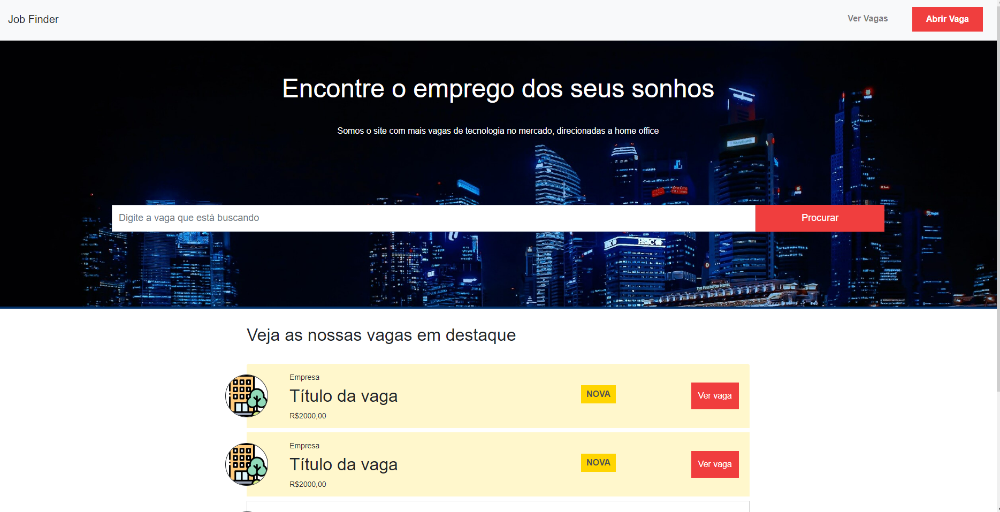
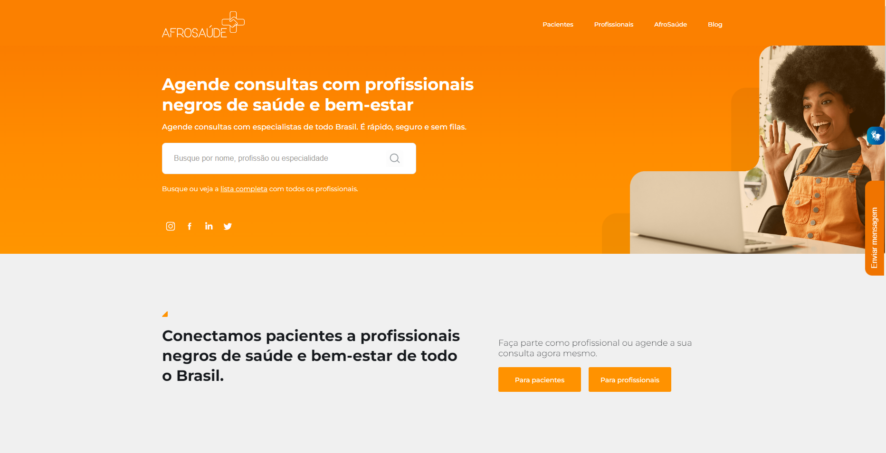

Sou estudante de análise e Desenvolvimento de Sistemas atualmente no quinto semestre. Uso meu tempo fazendo cursos pela plataforma "udemy", atualmente conquistei o certificado do "JavaScript do básico ao avançado (c/ Node.js e projetos)" e sigo fazendo "React do Zero a Maestria (c/ hooks, router, API, Projetos)". Já fui o desenvolvedor que passa o tempo pulando de linguagem para linguagem, comecei em C# na faculdade e fui para python, não muito tempo depois conhecendo desenvolvedores me falaram que a verdadeira reta seria JavaScript com Angular e assim foi por um tempo, atualmente estudo e posso falar que uso melhor HTML, Css, JavaScript, fico entre Angular e React, mas atualmente sigo com React por ser muito requisitado no mercado e estudo um pouco de NodeJs e bem raramente java para complementar. Tenho vontade de fazer uma pós-graduação em Engenharia de Software.
Job Finder foi meu primeiro projeto usando NodeJs e React. O website é uma plataforma a onde profissionais de tecnologia podem encontrar trabalho, o site veio como exercício de um curso que fiz, então tive contato com as tecnologias mencionadas e banco de dados.
O projeto grupo multipli foi um projeto a qual participei fazendo manutenção e codificação da parte visual, usamos Angular e Node para a construção do mesmo. O site multipli é uma rede de profissionais de diferentes áreas, nele as pessoas cadastradas tem a possibilidades de encontrar trabalhos com maior facilidade.
Afrosaúde é uma plataforma medica voltada para profissionais negros de saúde, consultas marcadas e realizadas online para facilitar a forma em que nossa rotina se desenvolve atualmente. Nesse projeto que fiz no meu primeiro estágio, tive contato com Angular profissionalmente a primeira vez, fiz codificação e correção do visual da página e do dashbord.
